A'DAN Z'YE FANTASTİK CANAVARLAR
ACROMANTULA (Akromantula)
S.B.S: XXXXX
Akromantula insan dilini konuşabilen sekiz gözlü devasa bir örümcektir, ilk olarak Borneo'nun balta girmemiş ormanlarında ortaya çıkmıştır. Belirgin özellikleri arasında vücudunu saran siyah kalın kılları, arası beş metreye varabilen bacakları, heyecanlandığında ya da kızdığında belirgin bir tıkırtı sesi çıkaran kıskaçları ve zehirli salgısı vardır. Akromantula etoburdur ve büyük avları tercih eder. Toprakta kubbe şeklinde ağlar örer. Dişileri erkeklerinden büyüktür ve bir seferde 100 taneye kadar yumurta yumurtlayabilir. Yumuşak ve beyaz olan bu yumurtalar, deniztopları kadar büyüktür. Yavrular altı ilâ sekiz haftada yumurtadan çıkar. Akromantula yumurtaları, Sihirli Yaratıkların Düzenlenmesi ve Denetimi Dairesi'nce, A Sınıfı Ticareti Yapılamayan Mallar olarak tanımlanmıştır, yani ithali ya da satışı halinde ağır cezalar verilir.
Bu canavarı, büyük bir ihtimalle evlerini ya da hazinelerini koruma amacıyla, büyücülerin yetiştirdiğine inanılır. Sihirle yaratılmış canavarlann çoğu için de aynı şey geçerlidir. İnsan zekâsına yakın zekâsına rağmen Akromantula eğitilemez ve hem büyücüler hem de Muggle'lar için çok tehlikelidir.
Bir Akromantula kolonisinin İskoçya'ya yerleştiğine ilişkin söylentiler doğrulanmamıştır.
ASHWINDER (KÜLBÜKÜL)
S.B.S.: XXX
Külbükül, sihirli bir ateşin haddinden uzun süreyle kontrolsüz halde yanmasına meydan verilince yaratılır. Alev alev yanan kırmızı gözleri olan bu ince, soluk gri yılan, denetlenmemiş ateşin korlarından yükselir ve kendini içinde bulduğu mekânın gölgelerine doğru kaydırarak gider, arkasında kül izleri bırakır.
Külbükül sadece bir saat yaşar ve bu süre içinde de yumurtalarını bırakacağı karanlık ve korunaklı bir nokta arar. Sonra da toza dönüşür. Külbükül yumurtaları parlak kırmızıdır, şiddetli bir ısı yayarlar. Bulunup uygun bir büyüyle dondurulmazlarsa, o mekânı birkaç dakikada tutuştururlar. Evin içinde bir ya da daha fazla Külbükül'ün başıboş dolaştığının farkına varan büyücü, derhal onları bulmalı ve yumurtaların olduğu yuvayı saptamalıdır. Bu yumurtalar bir kez dondurulduktan sonra Aşk İksiri yapımında çok değerlidir ve sıtma tedavisi için olduğu gibi yenebilir.
Külbükül'lere dünyanın her yerinde rastlanır.
AUGUREY (KAHŞİN)
(İrlanda Anka Kuşu olarak da bilinir)
S.B.S.: XX
Kahşin kimi zaman başka Kuzey Avrupa ülkelerinde de bulunmasına rağmen, Britanya ve İrlanda'ya özgü bir kuştur. Zayıf ve kederli görünüşlü olan bu kuş yeşilimsi siyah renktedir ve küçük, az beslenmiş bir akbabayı andırır. Son derece utangaçtır, böğürtlen çalıları ya da dikenler arasında yuva yapar, büyük böceklerle perileri yer, sadece şiddetli yağmurda uçar, bunun dışında ise, gözyaşı şeklindeki yuvasında saklı kalır.
Kahşin'in pes perdeden ve titreşimli, kendine has bir çığlığı vardır. Vaktiyle bu çığlığın ölümü haber verdiğine inanılırdı. Büyücüler bu yürek parçalayıcı sesi duyma korkusuyla Kahşin yuvalarından kaçınırlardı. Sık bir çalılıktan geçerken göze görünmeyen bir Kahşin'in feryat ettiğini duyunca kalp krizi geçiren birden fazla büyücü olduğuna inanılır. Ancak sabırlı araştırmalar sonunda Kahşin'in sadece yağmur yaklaşınca şarkı söylediği anlaşılmıştır. Kahşin'e o gün bugün evin hava tahmincisi olarak rağbet edilmiş olsa da, çoğu kişi kış ayları boyunca onun durup dinlenmeden sızlanmasına katlanmakta zorlanır. Kahşin tüyleri, tüy kalem olarak işe yaramaz, çünkü mürekkebi geri püskürtürler.
BASİLİSK (Yılanların Kralı olarak da bilinir)
S.B.S.: XXXXX
Kayda geçen ilk Basilisk, Yunanlı bir Kara Büyücü ve Çatalağız olan Hain Herpo tarafından yetiştirilmişti. Herpo, birçok deneyin ardından bir karakurbağasının üzerinde kuluçkaya yattığı bir tavuk yumurtasından, olağanüstü tehlikeli güçlere sahip devasa bir yılan çıkacağını keşfetmişti.
Basilisk, uzunluğu 16 metreye ulaşabilen parlak yeşil renkli bir yılandır. Erkeğin başının üstünde kırmızı bir sorguç vardır. Dişleri son derece zehirlidir ama en tehlikeli saldırı silahı, koca sarı gözleriyle bakışıdır. Bu gözlere doğrudan doğruya bakan herkes anında ölür.
Yemek kaynağı yeterliyse (Basilisk bütün memelilerle kuşları ve sürüngenlerin çoğunu yer), yılan çok uzun süre yaşayabilir. Hain Herpo'nun Basilisk'inin hemen hemen dokuz yüz yıl yaşadığı sanılıyor.
Basilisk yaratmak Ortaçağ'dan beri yasadışıdır, ne var ki bu işi gizlemek için, Sihirli Yaratıkların Düzenlenmesi ve Denetimi Dairesi geldiğinde karakurbağasının altından tavuk yumurtasını almak yeter. Ancak, Basiliskler, Çatalağızlar dışında kimse tarafından kontrol edilemeyeceği için, başkaları için ne kadar tehlikelilerse çoğu Kara Büyücü için de aynı ölçüde tehlikelidirler. En azından dört yüz yıldır İngiltere'de Basilisk görüldüğüne ilişkin bir kayıt yoktur .
BlLLYWIG (CIZKIPIR)
S.B.S.: XXX
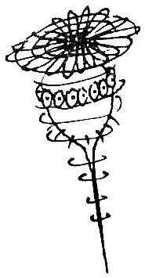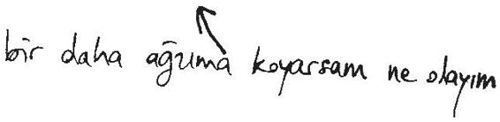Cızkıpır. Avustralya'ya özgü bir böcektir. Bir santimden biraz büyüktür ve parlak safir mavisi renktedir ama öyle hızla hareket eder ki, Muggle'lar tarafından görülemez. Hatta çoğu büyücü bile onu ancak kendisini soktuktan sonra fark eder, Cızkıpır'ın kanatları başının tepesinde birleşmiştir ve çok büyük bir hızla döner, böylece uçarken kendisi de kendi etrafında topaç gibi fırıl fırıl döner. Gövdesinin alt tarafinda ince uzun bir iğne vardır. Cızkıpır tarafından sokulanlar önce bir baş dönmesine uğrar, sonra da havaya yükselirler. Genç Avustralya cadılarıyla buyücüleri, bu yan etkilerin keyfini çıkarmak için kuşaklar boyunca Cızkıpır'ları yakalamaya ve kendilerini soksun diye kışkırtmaya çalışmışlardır. Ancak çok fazla sokulma da kurbanın günler boyunca kontrol edilmez bir şekilde havada asılı kalmasma yol açmıştır. Ağır alerjik bir tepkinin söz konusu olduğu durumlarda da, bu havada süzülme durumu kalıcı hale gelebilir. Kurutulmuş Cızkıpır iğneleri birçok iksirde kullanılır ve Fışırdayan Vızvızlar denen popüler tatlının da bileşenlerinden biri olduklarına inanılır.
BOWTRUCKLE (KABULUK)
S.B.S.: XX
Kabuluk, çoğunlukla İngiltere'nin batısında, Güney Almanya ve bazı İskandinav ormanlarında bulunan ve ağaçların koruyucusu olan bir yaratıktır. Küçüktür (boyu en fazla otuz santim), iki küçük kahverengi gözü vardır ve ağaç kabuğu ile ince dallardan yapılmış gibi durduğundan, fark edilmesi çok zordur.
Böcek yiyen Kabuluk barışçıl ve son derece utangaç bir yaratıktır ama oturduğu ağaç tehdit altındayken, yuvasına zarar verme girişiminde bulunan oduncu ya da ağaç cerrahının üzerine atladığı ve uzun, sivri parmaklarıyla gözünü oyduğu görülmüştür. Kabuluk'a tahta biti verilmesi onu, bir cadı ya da büyücünün ağacından asa tahtası almasına yetecek bir süre boyunca sakinleştirebilir.
BUNDİMUN
S.B.S.: XXX
Bundimun'lar dünyanın dört yanında bulunur. Sürünerek döşeme tahtalarının altına ve süpürgeliklerin arkasına girme ustası olan bu yaratık, evleri istila eder. Bir Bundimun'un varlığı çoğu kez kötü bir bozulma kokusuyla kendini gösterir. Bundimun, bulunduğu yerin temellerini çürüten bir salgı salgılar.
Bundimun hareketsiz haldeyken gözleri olan yeşilimsi bir mantar öbeğine benzer, ama korkunca çok sayıda uzun ve ince bacaklarıyla sıvışır. Kirle beslenir. Fırçalama büyüleri bir evi Bundimun istilasından kurtarabilir ama eğer çok büyümelerine izin verilirse, ev yıkılmadan önce Sihirli Yaratıkların Düzenlenmesi ve Denetimi Dairesi'yle (Zararlılar Bölümü) temasa geçilmelidir. Sulandırılmış Bundimun salgısı bazı sihirli temizleme sıvılarında kullanılır.
CENTAUR (AT-ADAM)
S.B.S.: XXXX
At-adam'ın herhangi bir renkte olabilen at gövdesinin üzerinde bir insan kafası, göğsü ve kolları vardır. Zeki olduğu ve konuşabildiği için kelimenin tam anlamıyla bir canavar sayılmaz ama Sihir Bakanlığı tarafından kendi talebiyle bu sınıfa konmuştur (Kitabın Giriş'ine bakın).
At-adam, ormanda yaşar. Şimdi Avrupa'nın birçok bölgesinde at-adam toplulukları olmasına rağmen kökeninin Yunanistan olduğu sanılır. At-adamların bulunduğu ülkelerin her birindeki büyücülük yetkilileri, onların Muggle'lar tarafından rahatsız edilmemesi için at-adamlara özel alanlar ayırmıştır. Ancak insanlardan saklanmak için kendi yöntemleri olan atradamların büyücü korumasına pek ihtiyaçları yoktur.
At-adamlar gizemli yaratıklardır. Çoğunlukla Muggle'lara olduğu gibi büyücülere de güvenmezler ve aslında aramızda pek bir ayrım yapmıyor gibidirler. Sayıları on ilâ elli arasında değişen sürülerde yaşarlar. Sihirli şifa verme, kehanet, okçuluk ve astronomi dallarında çok iyi oldukları rivayet olunur.
CHIMAERA (KİMERA)
S.B.S.: XXXXX
Kimera aslan kafalı, keçi vücutlu ve ejderha kuyruklu ender bulunan bir Yunan canavarıdır. Hırçın ve kana susamış olan Kimera, son derece tehlikelidir. Bir Kimera öldürmeyi şimdiye kadar tek bir kişi başarmıştır ve söz konusu talihsiz büyücü kısa süre sonra, harcadığı çabadan bitkin bir halde, kanatlı atından (aşağıya bakın) düşüp ölmüştür. Kimera yumurtaları A Sınıfı Ticareti Yapılamaz Mallar olarak sınıflandırılmıştır.
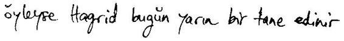
CHIZPURFLE (ÇİZBÜRÜ)
S.B.S.: XX
Çizbürü'ler, boyları bir-bir buçuk milim olan, yengece benzeyen, büyük dişli küçük parazitlerdir. Sihir onları çeker ve Krup'larla Kahşin'ler gibi yaratıkların kürklerini ve tüylerini istila edebilirler. Büyücü evlerine girip asalar gibi sihirli nesnelere saldırabilir, onları yavaş yavaş kemirerek büyülü çekirdeğe ulaşırlar. Kirli kazanlara girip burada kalmış iksir damlacıklarını da oburca yutabilirler. Piyasada bulunan çok sayıdaki patentli zehirlerden biriyle yok edilmeleri kolay olsa da, Çizbürü'lerin sihirli maddeler yiyip şişmesinin ortaya çıkaracağı şiddetli istilayla başetmek zordur. Bu yüzden de Sihirli Yaratıkların Düzenlenmesi ve Denetimi Dairesi'nin Zararlılar Bölümünün yardıma gelmesi gerekebilir.
CLABBERT (EKŞİRİK)
S.B.S.: XX
Ekşirik, maymun ile kurbağa kırması gibi görünen, ağaçlarda yaşayan bir yaratıktır. İlk kez Amerika'nın güney eyaletlerinde ortaya çıktı, ama o zamandan beri dünyanın her yanına ithal edildi. Pürüzsüz ve tüysüz derisi benekli yeşildir, elleriyle ayakları perdelidir. Uzun ve esnek kollarıyla bacakları, Ekşirik'in bir orangutan çevikliğiyle daldan dala atlamasını sağlar. Başında kısa boynuzlar vardır, sırıtıyormuş izlenimi veren ağzı da ustura gibi keskin dişlerle doludur. Ekşirik en çok küçük kertenkeleler ve kuşlarla beslenir.
En belirgin özelliği ise, alnının ortasında bulunan ve bir tehlike hisettığinde kırmızıya dönüşüp ışıldayan büyük kabartıdır. Amerikalı büyücüler vaktiyle, yaklaşan Muggle'lara karşı onları erkenden uyarsın diye bahçelerinde Ekşirik bulundururlardı ama Uluslararası Büyücüler Konfederasyonu'nun büyük para cezaları koyması üzerine bu uygulama büyük ölçüde sona erdi. Gerçi geceleyin Ekşirik kabartılarıyla ışıl ışıl yanan bir ağaç görmek dekoratif oluyordu ama, komşularının neden haziran ayında hâlâ Noel ışıkları bulundurduğunu merak eden haddinden fazla Muggle'ı oraya çekiyordu.
KRUP
S.B.S.: XXX
Krup'un kökeni, İngiltere'nin güııeybatısıdır. Çatallı kuyruğu dışında Jack Russell cinsi tenyelere çok benzer. Krup'un büyücüler tarafından yaratılmış bir köpek olduğuna neredeyse kesin gözüyle bakabiliriz, çünkü büyücülere son derece sadık, Muggle'lara karşı da yırtıcıdır. Müthiş bir leşçidir, yercücelerinden eski araba lastiklerine kadar her şeyi yer. Krup ruhsatları, Sihirli Yaratıkların Düzenlenmesi ve Denetimi Dairesi'nden alınabilir, ancak ruhsat için başvuran büyücünün Krup'u Muggle yerleşim alanlarında kontrol edebildiğini kanıtlayan basit bir testi tamamlaması gerekir. Yasalara göre Krup sahipleri, yaratık altı ilâ sekiz haftalıkken acı vermeyen bir Koparma Büyüsü ile kuyruğunu yok etmekle yükümlüdür. Bu şekilde Muggle'ların durumu fark etmesi önlenir.
DEMIGUISE (GİZİLGEN)
S.B.S.: XXXX
Gizilgen, Uzakdoğu'da bulunur, ama bulun bulabilirseniz... Çünkü bu canavar kendini tehdit altında hissedince görünmez olma yetisine sahiptir ve yalnızca onu yakalamakta ustalaşmış büyücüler tarafından görülebilir.
Gizilgen barışçıl, ot yiyen bir canavardır. Görünüşüyle zarif bir maymunu andırır, çoğu kez tüylerinin örttüğü büyük, siyah, hüzünlü gözleri vardır. Bütün gövdesi uzun, ince, ipeksi, gümüşümsü tüylerle kaplıdır. Bu tüylerden Görünmezlik Pelerini dokunabildiği için, Gizilgen postu çok değerlidir.
DIRICAWL (SIRGA)
S.B.S.: XX
Sırga, Mauritius kökenlidir. Tombul gövdeli, kabarık tüylü, uçamayan bir kuştur. En dikkat çekici özelliği, tehlikeden kaçma yöntemidir. Bir tüy bulutu arasında gözden kaybolup başka bir yerde ortaya çıkabilir (anka kuşu da aynı özelliği paylaşır; aşağıya bakın).
İşin ilginç yanı, Muggle'ların bir zamanlar Sırga'nın varlığının tamamen farkında olmalarıdır (onu "dodo" adıyla bilirler). Öte yandan, onun istediği zaman kaybolduğunun farkında olmadıkları için, dodoları avlayıp nesillerini tükettiklerine inanıyorlar. Bu durum, Muggle'lar arasında dost yaratıkları gelişigüzel öldürme konusundaki bilinci yükselttiği için, Uluslararası Büyücüler Konfederasyonu, Muggle'ların Sırga'nın hâlâ varlığını sürdürdüğünü bilmemesini tercih etmektedir.
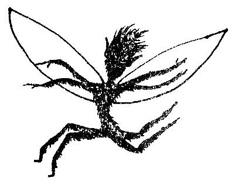DOXY (DOKSİ)
(Bazen Isıran Peri olarak bilinir)
S.B.S.: XXX
Doksi, oldukça farklı bir tür olmasına rağmen, çoğu kez perilerle karıştırılır (aşağıya bakın). Periler gibi Doksi de minicik bir insan biçimine sahiptir, ancak Doksi kalın siyah kıllarla kaplıdır ve fazladan birer koluyla bacağı vardır. Doksi'nin kanatları kalındır, kavisli ve parlaktır, kınkanatlı böceklerin kanatlarına benzer. Doksilere bütün kuzey Avrupa ile Amerika'da rastlanır, soğuk iklimleri tercih ederler. Bir seferinde beş yüz yumurta yumurtlar ve onları gömerler. Yavrular yumurtadan iki ilâ üç haftada çıkar.
Doksilerin çift sıralı sivri, zehirli dişleri vardır. Isırılırsanız, panzehir almanız gerekir.
DRAGON (EJDERHA)
S.B.S.: XXXX
Belki de sihirli canavarların en ünlüsü olan ejderhalar, en zor saklananlar arasındadır. Dişiler genellikle erkeklerden daha büyük ve daha saldırgan olur, ama gene de her iki cinse de sadece büyük beceri sahibi ve eğitilmiş büyücülerden başkası yaklaşmamalıdır. Ejderha derisi, kanı, yüreği, karaciğeri ve boynuzu son derece sihirli özelliklere sahiptir, ancak ejderha yumurtaları A Sınıfı Ticareti Yapılmaz Mallar olarak tanımlanır.
On tür ejderha vardır, ne var ki bunların zaman zaman aralarında çiftleşmesi sonucu ender rastlanır kırmalar elde edilir. Safkan ejderhalar şunlardır:
ANTİPODEAN OPALEYE
(ÖBÜRUÇ OPALGÖZÜ)
Opalgöz, Yeni Zelanda'nın yerlisidir, ancak kendi memleketindeki alanlar azalınca Avustralya'ya göçtüğü de bilinir. Bir ejderha için alışılmadık biçimde, dağlar yerine vadilerde yaşar. Orta boydadır (iki ilâ üç ton). Yanardöner, inci gibi pulları ve ona adını veren parlak, çok-renkli, gözbebeksiz gözleriyle, belki de en güzel ejderha tipidir. Çok canlı kırmızı bir alev çıkartır ama, ejderha standartlarına göre pek saldırgan sayılmaz ve karnı aç değilse nadiren öldürür. En sevdiği yiyecek koyunlar olsa da, daha büyük avlara saldırdığı da görülmüştür. 1970'li yılların sonundaki kanguru ölümleri dalgası, baskın bir dişi tarafından yurdundan sürülmüş erkek bir Opalgöz'den bilinmişti. Opalgöz yumurtaları açık gridir ve dikkatsiz Muggle'lar tarafından fosil sanılabilir.
CHINESE FIREBALL
(ÇİN ATEŞTOPU)
(Bazen aslanejderha olarak bilinir)
Doğu'ya özgü tek ejderhanın son derece çarpıcı bir görünüşü vardır. Kırmızı ve düzgün pulludur, küçük kalkık burunlu yüzünün çevresinde altın dikenlerden tuhaf bir saçak ve adamakıllı pırtlak gözleri vardır. Ateştopu adını, kızdırıldığı zaman burun deliklerinden fîşkıran mantar şeklindeki alevden almıştır. İki ilâ dört ton arası ağırlıktadır, dişisi erkeğinden daha büyüktür Yumurtaları altın benekli parlak koyu kırmızıdır ve Çin büyücülerinin yararlandığı kabuklarına çok değer verilir. Ateştopu saldırgandır ama kendi türüne karşı çoğu ejderhadan daha hoşgörülü davranır, bazen kendi bölgesini başka bir, hatta iki ejderhayla paylaşmaya razı olur. Ateştopu çoğu memeliyi yer ama domuzlarla insanları tercih eder.
COMMON WELSH GREEN
(SIRADAN GAL YEŞİLİ)
Gal Yeşili, yurdunun yemyeşil otlarıyla bütünleşse de, yuvasını, varlığını sürdürmesi için ona özel bir bölgenin ayrıldığı yüksek dağlarda kurar. Ilfracombe Olayı'nı saymazsak (Giriş'e bakın), ejderhaların en az sorun çıkaranlarındandır. O da Opalgöz gibi koyunları tercih eder ve kışkırtılmadığı sürece insanlardan özenle uzak durur. Gal Yeşili'nin kolayca tanınabilen ve şaşırtıcı şekilde ahenkli bir kükremesi vardır. Ateşi ince fıskiyeler halinde püskürtür. Gal Yeşili'nin yumurtaları, yeşil benekli toprak kahverengisidir.
HEBRIDEAN BLACK
(HEBRİD SİYAHI)
Britanya'nın diğer yerel ejderhası, Gal'li arkadaşından daha saldırgandır. Her Hebrid Siyahı'na yaklaşık iki yüz elli kilometrekarelik bir bölge gerekir. Uzunluğu dokuz metre civarında olan Hebrid Siyahı, sert pullu, parlak mor gözlüdür, sırtında bir sıra sığ ama ustura keskinliğinde pütür vardır. Kuyruğunun ucunda ok biçiminde bir diken bulunur, kanatları yarasa kanatlarına benzer. Hebrid Siyahı daha çok geyiklerle beslenir, ama zaman zaman büyük köpekleri ve hatta sığırları yakaladığı da görülmüştür. Yüzyıllardır Hebrid'lerde oturan büyücü MacFusty klanı, geleneksel olarak kendi yerli ejderhalarının idaresini üstlenmiştir.
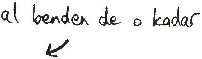
HUNGARIAN HORNTAIL
(MACAR BOYNUZKUYRUK)
Bütün ejderha soylarının en tehlikelisi sayılan Macar Boynuzkuyruk'un siyah pulları vardır, kertenkeleye benzer. Gözleri sarı, boynuzları bronzdur ve uzun kuyruğundan yine bronz renkte dikenler çıkar. Boynuzkuyruk ateşi en uzun mesafeye soluyan ejderhalardan biridir (on beş metreye kadar) Yumurtaları çimento rengi ve çok sert kabukludur. Yavrular, dikenleri daha doğdukları anda bile iyice gelişmiş olan kuyruklarıyla kabuğa vurarak dışarı çıkar. Macar Boynuzkuyruk keçilerle, koyunlarla ve mümkün olduğu zaman da insanlarla beslenir.
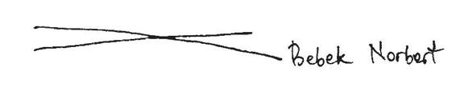
NORWEGIAN RIDGEBACK
(NORVEÇ PÜTÜRLÜSÜ)
Norveç Pütürlüsü birçok yönden Boynuzkuyruk'a benzer, ancak onun kuyruk dikenleri yerine, sırtında çok belirgin kapkara pütürler vardır. Kendi türüne karşı haddinden fazla saldırgan olan Pütürlü, günümüzde gittikçe daha ender rastlanan ejderha soylanndan biri haline gelmiştir. Büyük kara memelilerinin çoğu türüne saldırdığı bilinir ve, bir ejderha için sıradışı olsa da, suda yaşayan yaratıkları da yer. Kanıtlanmamış bir raporda, bir Pütürlü'nün 1802'de Norveç açıklannda bir balina yavrusunu kapıp götürdüğü öne sürülmektedir. Pütürlü yumurtaları siyahtır, yavrular da ateş soluma yeteneklerini diğer cinslerin yavrularından daha çabuk geliştirir (bir ilâ üç ay).
PERUVIAN VIPERTOOTH
(PERU ZEHİRDİŞLİSİ)
Bilinen bütün ejderhaların en küçüğü ve en hızlı uçanıdır. Topu topu beş metre uzunluğunda olan Peru Zehirdişlisi pürüzsüz pullu, siyah pütürcükleri olan, bakır renkli bir ejderhadır. Boynuzları kısa, dişleri son derece zehirlidir. Gerçi Zehirdişli'nin keçiler ve ineklerle beslenmeye de hiç itirazı yoktur ama, insanlardan öyle hoşlanır ki, Uluslararası Büyücüler Konfederasyonu on dokuzuncu yüzyıl sonlarında ürkütücü bir hızla artan Zehirdişli sayısını azaltmak için yok ediciler göndermek zorunda kalmıştır.
ROMANIAN LONGHORN
(ROMEN UZUNBOYNUZ)
Uzunboynuz'un koyu yeşil pulları ve avını kızartmadan önce deşerken kullandığı uzun, parlak altın renkte boynuzları vardır. Bu boynuzlar toz haline getirildiğinde iksir malzemesi olarak çok değer kazanır. Uzunboynuz'un anayurdu artık dünyanın en önemli ejderha koruma alanı haline gelmiştir, her milliyetten büyücü burada çeşit çeşit ejderhayı yakından inceleyebilir. Boynuzlarının ticareti yapıldığı için sayıları çok azaldığından, son yıllarda yoğun bir Uzunboynuz yetiştirme programı uygulanmıştır, boynuzları da artık C Sınıfı Ticareti Yapılır Madde olarak tanımlanmaktadır.
SWEDISH SHORT-SNOUT
(İSVEÇ KISABURNU)
İsveç Kısaburnu, derisi koruyucu eldiven ve kalkan yapımında kullanılan, gümüşi mavi, güzel bir ejderhadır. Burun deliklerinden fışkıran alev parlak mavidir ve keresteyi de, kemiği de birkaç saniyede küle dönüştürebilir. Kısaburun'un insan öldürme sabıkası çoğu ejderhanınkinden azdır ama, yabanıl ve insan ayağı değmemiş dağlık bölgelerde yaşamayı tercih ettiği için bu da onun marifeti sayılamaz.
UKRANIAN IRONBELLY
(UKRAYNA DEMİRGÖBEĞİ)
En büyük ejderha türü olan Demirgöbek'in altı ton ağırlığa ulaştığı bilinir. Toparlak olan ve Zehirdişli'yle Uzunboynuz'dan daha yavaş uçan Demirgöbek, buna rağmen son derece tehlikelidir, konduğu yerleşim yerlerini ezecek yapıdadır. Pulları metalimsi bir gridir, gözleri koyu kırmızıdır, tırnakları da pek uzun ve yırtıcıdır. Demirgöbek'lerin bir tanesi 1799'da Karadeniz'den (neyse ki boş olan) bir yelkenliyi kapıp götürdüğünden beri, Ukrayna büyücülük yetkilileri tarafindan sürekli gözaltında tutulmaktadır.
DUGBOG (DALBATAK)
S.B.S.: XXX
Dalbatak, Avrupa ile Kuzey ve Güney Amerika'da bulunan, bataklıklarda yaşayan bir yaratıktır. Hareketsizken kuru bir dala benzer. Ama yakından bakınca yüzgeçli pençeleri ve çok keskin dişleri olduğu görülür. Bataklıklarda kayarak ve süzülerek ilerler, daha çok küçük memelilerle beslenir ve yaya insanların bileklerine de ağır hasar verir. Ancak Dalbatak'ın en sevdiği yiyecek, Adamotu'dur. Adamotu yetiştiricileri zaman zaman çok değerli bitkilerinden birinin yapraklarını tutup çektiklerinde alt tarafta kanlı ve ezilmiş bir yığın bulmuşlardır ki, bunu da Dalbataklara borçludurlar.
ERKLING (BİZARCIK)
S.B.S.: XXXX
Bizarcık, Almanya'daki Kara Orman'da çıkmış cinimsi bir yaratıktır. Yercücesinden büyüktür (ortalama doksan santim), sivri bir yüzü vardır ve özellikle çocuklara çekici gelen tiz bir sesle gıdaklar. Çocukları velilerinden uzağa çekmeye çalışıp yer. Ne var ki, Alman Sihir Bakanlığı'nın sıkı kontrolleri, son birkaç yüz yıldır Bizarcık'ların sorumlu olduğu ölümlerin sayısını büyük ölçüde azaltmıştır. Bilinen son Bizarcık saldırısının hedefi altı yaşındaki büyücü Bruno Schmidt'ti. Bu saldırı da küçük Mr. Schmidt'in, babasının katlanabilir kazanıyla Bizarcık'ın kafasına şiddetle vurup onu öldürmesiyle sonuçlanmıştı.
ERUMPENT (PALDIRAN)
S.B.S.: XXXX
Paldıran gri renkli, kocaman, çok güçlü bir Afrika canavarıdır. Ağırlığı bir tonu bulan Paldıran, uzaktan gergedanla karıştırılabilır. Çoğu büyüyü ve laneti gerisingeri püskürten çok kalın bir derisi, burnunun ucunda büyük, sivri bir boynuzu, uzun, ip gibi bir kuyruğu vardır. Paldıranlar bir seferinde tek bir yavru doğurur.
Paldıran fena halde kışkırtılmadıkça saldırmaz ama saldırdığı zaman da sonuç genellikle felakettir. Boynuzu deriden metale kadar her şeyi deler. Ayrıca bu boynuz, içine işlediği her şeyin patlamasına yol açan ölümcül bir sıvı içerir.
Paldıranların erkekleri çiftleşme mevsiminde birbirlerini sık sık patlattığı için sayıları fazla değildir. Afrika büyücüleri onlara karşı çok dikkatli davranır. Paldıranların boynuzları, kuyrukları ve Patlatan Sıvıları iksirlerde kullanılsa da, artık B Sınıfı Ticareti Yapılabilir Maddeler (Tehlikeli ve Sıkı Kontrole Bağlı) sınıfina alınmışlardır.
FAIRY (PERİ)
S.B.S.: XX
Peri kıt zekâlı, küçük ve dekoratif bir canavardır. Boyu iki buçuk ile on iki buçuk santim arasında olan peri, insanımsı küçük bir gövdeye, başa ve kollarla bacaklara sahiptir ama tipine göre şeffaf ya da çok renkli olabilen, büyük böceksi kanatları da vardır.
Peri, Kahşin gibi yırtıcıları uzaklaştırmak için yararlanabileceği zayıf bir sihre sahiptir. Kavgacı bir yapısı vardır ama çok kendini beğenmiş olduğu için, süs gibi davranması istenince hemen uysal bir hal alir. İnsana benzediği halde insan dilini konuşamaz. Hemcinsleriyle iletişim kurmak için çok tiz bir vızıltı çıkarır.
Peri, yaprakların alt tarafına, bir seferde sayısı elliye varabilen yumurta bırakır. Yumurtalardan parlak renkli larvalar çıkar. Bu larvalar altı ile on gün arasında kendilerine bir koza örer ve bir ay sonra da tamamen gelişmiş, kanatlı yetişkinler olarak bu kozalardan çıkarlar.
FIRE CRAB (ATEŞ YENGECİ)
S.B.S.: XXX
Ateş Yengeci, adına rağmen, fevkalade mücevherli bir kabuğu olan büyük bir tosbağaya benzer. Anayurdu Fiji'deki bir kıyı şeridi, onlar için bir koruma alanına dönüştürülmüştür. Ateş Yengeci, yalnızca değerli kabuğuna göz koyan Muggle'lara karşı değil, kabuklarından çok değerli kazanlar yapan vicdansız büyücülere karşı da korunmaktadır. Ancak, Ateş Yengeci'nin kendi savunma mekanizması da vardır: Saldırıya uğradığı zaman, arka ucundan alevler fışkırtır. Ateş Yengeçleri ev hayvanı olarak da ihraç edilir ama bunun için özel bir ruhsat gereklidir.
FLOBBERWORM (PITIRKURT)
S.B.S.: X
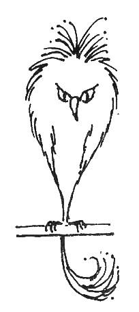Pıtırkurt rutubetli hendeklerde yaşar. Uzunluğu yirmibeş santime ulaşan kalın, kahverengi bir solucan olan Pıtırkurt çok az hareket eder. Bir ucunu diğerinden ayırt etmek imkânsızdır, her ikisi de bir salgı çıkartır ve bu salgı bazen iksirlere kıvam vermek için kullanılır. Pıtırkurt neredeyse her çeşit bitkiyi yese de, marul, tercih eder.
FWOOPER (FUPHUP)
S.B.S.: XXX
Fuphup, çok canlı renkte tüyleri olan bir Afrika kuşudur. Fuphup'lar turuncu, pembe, ıhlamur yeşili ya da sarı renkte olabilir. Tüyleri uzun zamandır gösterişli tüy kalemlerin yapımında kullanılan Fuphup'lar, parlak desenli yumurtalar da yumurtlar. Şarkıları ilk başta hoşa gitse de sonuçta dinleyeni çıldırtır, bu yüzden de Fuhhup'lar üzerlerinde ayda bir pekiştirilmesi gereken bir Susturma Büyüsü'yle satılır. Bu yaratığın bakımı sorumluluk gerektirdiği için, Fuphup sahiplerinin ruhsat alması zorunludur.
GHOUL (GULYABANİ)
S.B.S.: XX
Gulyabani çirkin olsa da çok tehlikeli bir yaratık değildir. Biraz yapışkan, tavşan dişli bir umacıya benzer, genellikle büyücülerin tavanaraları ya da ağıllarında oturur, burada örümcek ve güve yer. İnim inim inler ve zaman zaman etrafa öteberi atar ama temelde saftır ve ona çarpıp tökezleyene korkutucu bir şekilde hırlamakla yetinir. Muggle'ların ellerine geçmiş büyücü evlerinden gulyabanileri çıkarmak için, Sihirli Yaratıkların Düzenlenmesi ve Denetimi Dairesi'nde bir Gulyabani Hizmet Birimi vardır, ama büyücü ailelerinde gulyabani çoğu kez bir sohbet konusu ya da evin hayvanı halini alır.
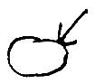GLUMBUMBLE (ELEMBÖCEĞİ)
S.B.S.: XXX
Elemböceği (Kuzey Avrupa) gri, tüylü vücutlu uçan bir böcektir. Bihoş yapraklarının yenmesi sonucu ortaya çıkan çılgınlığa karşı panzehir olarak kullanılan, melankoliye yol açan bir pekmez üretir. Arı kovanlarını istila ettikleri duyulmuştur, bunun bal üzerinde feci etkileri olur. Elemböcekleri içi boş ağaçlar ya da mağaralar gibi yerlerde yaşar. Isırganlarla beslenirler.
GNOME (YERCÜCESİ)
S.B.S.: XX
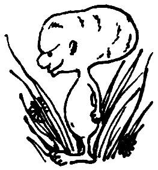Yercücesi, Kuzey Avrupa ve Amerika'nın her yerinde bulunan yaygın bir bahçe zararlısıdır. Boyu otuz santimi bulabilir, orantısız büyüklükte bir başı ve sert, kemikli ayakları vardır. Yercücesi, başı dönene kadar çevrilip sonra da bahçe duvarının ötesine savrulmak suretiyle bahçeden çıkartılabilir. Bunun yerine bir Carcar'dan da yararlanılabilir ama günümüzde pek çok büyücü bu yercücesi kontrol yöntemini çok acımasız buluyor.
GRAPHORN (SAPBOYNUZ)
S.B.S.: XXXX
Sapboynuz, Avrupa'nın dağlık yörelerinde bulunur. Büyük, grimsi mor renkte ve kambur sırtlı Sapboynuz'un iki tane çok uzun, sivri boynuzu vardır. Dört parmaklı büyük ayakları üzerinde yürür, son derece saldırgan yapıdadır. Zaman zaman dağ ifritlerinin Sapboynuz'lara bindiği görülür ama onlar kendilerini ehlileştirme yolundaki çabaları hiç hoş karşılamaz. Bu yüzden de sırtında ifrit olan bir Sapboynuz görmektense, Sapboynuz yaralarıyla kaplı bir ifrit görme ihtimali daha yüksektir. Toz haline getirilen boynuzları birçok iksirde kullanılır, ne var ki ele geçirmesi çok zor olduğundan son derece pahalıdır. Sapboynuz derisi ejderhanınkinden de kalındır ve birçok büyüyü geri püskürtür.
GRIFFIN (GRİFİN)
S.B.S.: XXXX
Grifin, Yunanistan'da ortaya çıkmıştır. Dev bir kartalın ön bacaklarına ve başına, buna karşılık bir aslanın gövdesi ve arka ayaklarına sahiptir. Sfenksler gibi (aşağıya bakın) Grifinler de büyücüler tarafından hazinelere muhafızlık etmekte kullanılır. Vahşi oldukları halde, birkaç usta büyücünün bir Grifin'le dostluk kurduğuna rastlanmıştır. Grifin'ler çiğ etle beslenir.
GRINDYLOW (GARKENEZ)
S.B.S.: XX
Boynuzlu, açık yeşil bir su şeytanı olan Garkenez, İngiltere ve İrlanda'nın her yerindeki göllerde bulunur. Küçük balıklarla beslenir, hem büyücülere hem de Muggle'lara karşı saldırganca davranır, ancak denizhalkının onları evcilleştirdiği görülmüştür. Garkenez'in, güçlü bir kavrayışı olan ama kolayca kırılabilen çok uzun parmakları vardır.
HlPPOCAMPUS (HİPOKAMPUS)
S.B.S.: XXX
Yunanistan kökenli Hipokampus, bir atın başıyla ön bacaklarına ve dev bir balığın arka bölümüyle kuyruğuna sahiptir. Bu türe en çok Akdeniz'de rastlandığı halde, 1949'da İskoçya açıklarında mavi renkte muhteşem bir örnek denizhalkı tarafından yakalanmış ve sonunda onlar tarafından evcilleştirilmiştir. Hipokampus'un büyük, yarı-şeffaf yumurtaları vardır, bunların içindeki yavru dışarıdan görülebilir.
HIPPOGRIFF (HİPOGRİF)
S.B.S.: XXX
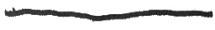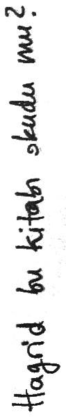Hipogrif, artık dünyanın her yerinde bulunsa da, Avrupa kökenlidir. Dev bir kartalın kafasına ve bir atın gövdesine sahiptir. Evcilleştirilebilir, ama böyle bir işe sadece uzmanlar girişmelidir. Bir Hipogrif'e yaklaşılırken, göz teması kesilmemelidir. Eğilip selam vermek iyi niyet gösterir. Eğer Hipogrif selamla karşılık verirse, ona yaklaşmak güvenlidir.
Hipogrif böcek bulmak için yeri kazar, ama kuşlarla küçük memelileri de yer. Yumurtlayacak olan Hipogrifler yerde yuvalar yapar ve bunların içine, yirmi dört saatte çatlayan, kolay kırılır, tek bir büyük yumurta bırakır. Tüyleri henüz bitmiş yavru Hipogrif bir hafta içinde uçmaya hazır hale gelir ama annesine uzun yolculuklarda eşlik etmesi için aradan aylar geçmesi gerekir.
HORKLUMP (CÖRKPÂRE)
S B S.: X
Artık Kuzey Avrupa'nın her yerinde yaygın olan Cörkpâre, İskandinavya'dan gelir. Seyrek ve ince siyah kıllarla kaplı, etli, pembemsi bir mantara benzer. Şaşılacak hızla üreyen Cörkpâre, ortalama büyüklükte bir bahçeyi birkaç günde sarar. En sevdiği yiyecek olan solucanları bulmak için toprağın içine kök değil de kuvvetli dokunaçlarını yayar. Cörkpâre, yercücelerinin çok sevdiği ve lezzetli bulduğu bir yiyecektir ama bunun dışında kayda değer bir yararı yoktur.
IMP (ŞEYTANCIK)
S.B.S.: XX
Şeytancıklar sadece Britanya ve İrlanda'da bulunur. Bazen cinperilerle karıştırılırlar. Aynı boydadırlar (on beş ilâ yirmi santim) ama cinperiler uçtuğu halde şeytancıklar uçamaz. Renkleri de aynı derecede canlı değildir (şeytanakların rengi genellikle koyu kahverengiyle siyah arasındadır). Ancak, aynı sulu espri anlayışına sahiptirler. Rutubetli ve bataklık yerleri tercih eder ve çoğunlukla nehir kıyılarında bulunurlar. Burada dikkatsiz kişileri iterek ya da onlara çelme takarak gönül eğlendirirler. Şeytancıklar küçük böcekleri yer, üreme alışkanlıkları da perilerinkine çok benzer ama koza örmezler. Yavruları yumurtadan üç buçuk-dört santim boyunda ve tamamen biçimlenmiş olarak çıkar.
JARVEY (CARCAR)
S.B.S.: XXX
Carcar, Britanya, İrlanda ve Kuzey Amerika'da bulunur. Konuşması hariç, çoğu yönden fazlaca büyümüş bir gelinciğe benzer. Ancak, neredeyse aralıksız olarak konuşurken kendini kısa (ve genellikle kaba) cümleciklerle sınırlayan Carcar'ın zekâsı, gerçek bir sohbet için yeterli değildir. Carcarlar daha çok toprağın altında yaşar ve yercücelerini avlar, ama köstebekleri, fareleri ve tarla sıçanlarını da yerler.
JOBBERKNOLL (PİRŞAKIR)
S.B.S.: XX
Pirşakır (Kuzey Avrupa ve Amerika) küçük böcekleri yiyen minicik, mavi, benekli bir kuştur. Ölüm anına kadar hiç ses çıkarmaz ama tam o anda duymuş olduğu her tür sesi sondan başlayıp başa doğru sıralayarak, upuzun bir çığlık koyuverir Pırşakır tüyleri, Hakikat Serumları ve Hafıza iksirlerinde kullanılır.
KAPPA
S.B.S.: XXXX
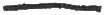Kappa sığ göl ve nehirlerde yaşayan bir Japon su şeytanıdır. Genellikle, tüy yerine balık pullarına sahip bir maymuna benzediği söylenir. Başının üstünde, içinde su taşıdığı bir oyuk vardır.
Kappa insan kanıyla beslenir ama ona, üzerine birinin adı oyulmuş bir salatalık atılırsa, o kişiye zarar vermemeye ikna edilebilir. Bir büyücü Kappa'yla karşı karşıya geldiğinde onu kandırıp eğilerek selam vermesini sağlayabilirse eğer, başındaki oyukta duran su dışarı akar ve Kappa bütün gücünü yitirir.
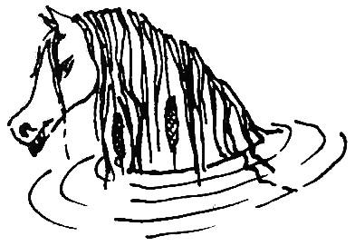
KELPIE (KELPİ)
S.B.S.: XXXX
Bu Britanya ve İrlanda su şeytanı birçok biçime bürünse de, en çok, yele yerine hasır sazları olan bir at şeklinde görülür. Tedbirsiz kişileri kandırıp sırtına bindirince dosdoğru nehrin ya da gölün dibine dalarak binicisini yiyip yutar, ve bir süre sonra kurbanın organları su yüzüne çıkar. Bir Kelpi'yle başa çıkmanın doğru yöntemi, Yerleştirme Büyüsü'yle kafasına bir gem geçirerek onu uysal ve tehlikesiz hale getirmektir.
Dünyanın en büyük Kelpi'si İskoçya'daki Loch Ness'tedir. En çok su yılanı (aşağıya bak) biçimine bürünmeyi sever. Uluslararası Büyücüler Konfederasyonu gözlemcileri, onun Muggle soruşturma ekibi yaklaştığında susamuruna, tehlike savuşturulunca da yeniden yılana dönüştüğünü görünce, gerçek bir yılanla karşıya karşıya olmadıklarını fark etmişlerdir.
KNARL (HIRPI)
S.B.S.: XXX
Hırpı (Kuzey Avrupa ve Amerika) Muggle'lar tarafından çoğu kez kirpiyle karıştırılır. Bir tek önemli davranış farklılığı hariç, iki tür gerçekten de birbirinden ayırt edilemez niteliktedir: Eğer bahçeye kirpi için yemek bırakılırsa, kirpi yemeği kabul eder ve bu armağanın keyfini çıkarır; öte yandan yiyecek ikram edilen bir Hırpı, ev sahibinin onu kandırıp tuzağa düşürmek istediğini sanır ve onun bahçe bitkilerini ya da bahçe süslerini darmaduman eder. Birçok Muggle çocuğu bu yüzden haksız yere haşarılıkla suçlanmıştır, oysa gerçek suçlu, tepesinin tası atmış bir Hırpı'dır.
KNEAZLE (MINCIK)
S.B.S.: XXX
Mıncık artık dünyanın her yerine ihraç ediliyor olsa da, aslında ilk olarak Britanya'da yetiştirilmiştir. Benekli, lekeli ya da noktalı kürkü olan küçük, kedi gibi bir yaratıktır. Çok büyük kulakları, aslan kuyruğu gibi bir kuyruğu olan Mıncık zekidir, bağımsız ruhludur, zaman zaman da saldırganca davranabilir. Ama bir cadı ya da büyücüyü severse mükemmel bir ev hayvanı olur. Mıncık'ın nahoş ya da şüpheli karakterleri sezmek konusunda esrarengiz bir yeteneği vardır. Dahası, kayboldukları takdirde sağ salim eve gitmeleri için sahibine rehberlik edeceğine güvenilebilir. Mıncık'ların bir batında sekiz taneye kadar yavruları olur ve kedilerle çiftleştirilebilirler. Görünüşleri Muggle'ların ilgisini uyandıracak kadar sıradışı olduğundan (Krup'lar ve Fuphup'larda olduğu gibi) onlara sahip olmak için de ruhsat gerekir.
LEPRECHAUN (AYAKKABICI CİN)
(bazen Klaurikorn olarak bilinir)
S.B.S.: XXX
Perilerden daha akıllı olan ve şeytancık, cinperi ya da Doksi'ler kadar kötücül olmayan ayakkabıcı cinler, gene de muzurdur. Yalnızca İrlanda'da bulunan bu cinlerin boyu on beş santime ulaşabilir, renkleri de yeşildir. Yapraklardan üstünkörü giysiler yarattıkları görülmüştür. "Ufak halk" arasında yalnızca ayakkabıcı cinler konuşur, ancak asla "varlık" olarak yeniden sınıflandırılmayı talep etmemişlerdir. Yavrularını doğururlar ve genellikle ormanlarda ya da koruluk alanlarda yaşarlar. Ancak, Muggle'ların dikkatini çekmekten hoşlandıkları için ayakkabıcı cinler de Muggle'ların çocuk edebiyatında neredeyse periler kadar çok yer alır. Ayakkabıcı cinler altın benzeri, gerçekmiş gibi görünen bir madde üretse de, bu madde, onları pek eğlendirerek, birkaç saat sonra yok olup gider. Ayakkabıcı cinler yaprak yer ve adları şakacıya çıktığı halde insanlara kalıcı hasar verdikleri hiç görülmemiştir.
LETHIFOLD (CANSARAR)
(Canlı Kefen olarak da bilinir)
S.B.S.: XXXXX
Cansarar yalnızca tropik iklimde yaşayan ve neyse ki az bulunan bir yaratıktır. Bir buçuk santim kadar kalınlıkta (eğer kısa süre önce bir kurbanı öldürmüş ve hazmetmişse, daha da kalın) siyah bir pelerine benzer, geceleyin yerde kayıp gider. Bir Cansarar'a ilişkin olarak sahip olduğumuz ilk bilgi, 1782 de Papua Yeni Gine'de tatil yaparken bir Cansarar saldırısından kurtulacak kadar talihli olan büyücü Flavius Belby tarafından kaleme alınmıştır.
Sabahın birinde nihayet uykum gelmişti ki, yakınlarda hafif bir hışırtı duydum. Kapının dışındaki ağacın yapraklarıdır herhalde diyerek yatakta döndüm, sırtımı cama çevirdim ve yatak odamın kapısının altından içeri kayan, biçimsiz kara bir gölgeye benzeyen bir şey gördüm. Hareketsiz yattım ve, uykulu uykulu, sadece mehtapla aydınlanan bir odada böyle bir gölgeye ne yol açabilir diye tahmin etmeye çalıştım. Şüphesiz, benim kıpırdamadan durmam, Cansarar'ın muhtemel kurbanının uyuduğuna inanmasına neden oldu.
Gölge, beni dehşete düşürerek yatağıma tırmanmaya koyuldu, hafif ağırlığını üstümde hissettim. En çok, dalgalanan siyah bir pelerine benziyordu. O yataktan yukarı bana doğru kayarak gelirken, kenarları belli belirsiz kıpırdanıyordu. Korkudan kaskatı kesildim, dimdik oturmadan önce çenemde onun yapışkan ve soğuk dokunuşunu hissettim.
O şey beni boğmaya çalıştı, amansızca yüzümden, ağzımla burun deliklerimden yukarı tırmandı ama ben mücadele ettim, bir yandan da soğukluğunun üzerimi sardığını hissediyordum. İmdat diye bile bağıramadım, el yordamıyla asamı aradım. O şey kendisini yüzüme yapıştırdığı için başım dönüyordu, nefes alamıyordum, bütün dikkatimi Sersemletme Büyüsü üzerinde topladım ve sonra da –bu büyü, yatak odamın kapısında bîr delik açtığı halde yaratığa boyun eğdiremediği için– Engelleme Büyüsü'ne başvurdum. Onun da bir faydası olmadı. Hâlâ çılgıncasına mücadele ederek yana doğru yuvarlandım, güm diye yere düştüm. Şimdi Cansarar beni tam olarak sarmıştı.
Nefesim kesilirken, bilincimi tamamen yitirmek üzere olduğumu biliyordum. Umutsuzluk içinde, enerjimin son kırıntılarını topladım. Asamı kendimden uzağa, yaratığın öldürücü kıvrımlarına tutarak ve yerel Tükürenbilye Kulübü Başkanı seçildiğim günün anısına tutunarak, Patronus Büyüsü'nü yaptım.
Neredeyse o anda, yüzümde temiz hava hissettim. Yukarı baktığımda o ölümcül gölge, Patronus'umun boynuzları üzerinde havaya fırlatılmıştı. Odanın karşısına uçtu ve hızla kayarak gözden kayboldu.
Belby'nin bunca dramatik şekilde açıkladığı gibi, Cansarar'ı püskürtecek tek büyü, Patronus'tur. Ancak, genellikle uyuyan kişilere saldırdığı için, kurbanlarının ona karşı herhangi bir sihirden yararlanacak fırsatı bulması zordur. Avını başarıyla boğduktan sonra, Cansarar yemeğini oracıkta, onun yatağında hazmeder. Sonra da evi eskisinden biraz daha kalın ve şişman bir halde terk eder, geride ne kendisinden, ne de kurbanından bir iz bırakır.
LOBALUG (FISIRLOP)
S.B.S.: XXX
Fısırlop, Kuzey Denizi'nin dibinde bulunur. Lastiğimsi bir fıskiye ile bir zehir kesesinden oluşan, yirmi beş santim boyunda basit bir yaratıktır. Tehdit altında kalınca zehir kesesini kasar, saldırgana zehir fışkırtır. Denizhalkı, Fısırlop'u silah olarak kullanır. Büyücülerin de iksirlerde kullanmak için zehrini çıkardığı görülmüştür ama, bu uygulama sıkı bir denetim altındadır.
MACKLED MALACLAW (BENEKLİ BETPENÇE)
S.B.S.: XXX
Betpençe, en çok Avrupa'nın kayalık kıyılarında bulunan ve karada yaşayan bir yaratıktır, ilk bakışta ıstakoza benzemesine rağmen, eti insan tüketimine uygun olmadığı, yüksek ateşe ve göze hoş görünmeyen yeşilimsi isiliklere yol açacağı için, kesinlikle yenmemelidir.
Betpençe'nin boyu otuz santime ulaşabilir, açık gri renkte, koyu yeşil beneklidir. Küçük kabuklu hayvanları yer, daha büyük avları yakalama girişiminde de bulunur. Betpençe'nin ısırığının sıradışı bir yan etkisi vardır: Kurbanını, yaralanma olayından sonra yaklaşık bir hafta süreyle son derece talihsiz kılar. Eğer bir betpençe tarafından ısırıldınızsa, her türlü bahis, iddia ve spekülatif girişimlerden uzak durun, çünkü bu tür uğraşlarda her şev aleyhinize gelişecektir.
MANTICORE (MANTİKOR)
S.B.S.: XXXXX
Mantikor, insan başlı, aslan gövdeli ve akrep kuyruğuna sahip, son derece tehlikeli bir Yunan canavarıdır. Kimera kadar tehlikeli olan ve onun kadar az bulunan Mantikor, kurbanını yiyip yutarken tatlı tatlı şarkı söylemesiyle bilinir. Mantikor derisi, bilinen büyülerin hemen hemen hepsini püskürtür, sokması da anında ölüme yol açar.
MERPEOPLE (DENİZ HALKI)
(Siren, Selky, Merrow olarak da bilinir)
S.B.S.: XXXX
Denizhalkı dünyanın her yerinde bulunur, ama görünüşleri neredeyse insanlar kadar çeşitlilik gösterir. Alışkanlıkları ve gelenekleri, at-adamlarınki kadar esrarlı kalmıştır. Ancak Denizhalkı dilinin üstesinden gelmiş büyücüler, onların doğal çevreye göre büyüklükleri değişen son derece örgütlü topluluklar halinde yaşadıklarından söz eder, bazıları da özenle inşa edilmiş evler yapmışlardır. At-adamlar gibi denizhalkı da, varlık olmaktansa canavar olmayı tercih etmiştir (Giriş'e bakın).
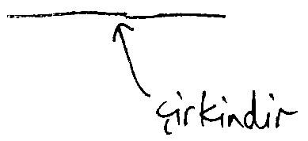
Kayda geçen ilk denizhalkı Siren'lerdir (Yunanistan). Muggle edebiyatı ve resminde sıkça görülen güzel denizkızlarını ise daha sıcak sularda buluruz. İskoçya'nın Selky'leri ile İrlanda'nın Merrow'ları o kadar güzel değildir ama bütün denizhalkının ortak özelliği olan müzik sevgisini onlar da paylaşır.
MOKE (PIŞIT)
S.B.S.: XXX
Pışıt, boyu yirmi beş santime varan, Britanya ile İrlanda'nın her yerinde bulunan gümüş-yeşili bir kertenkeledir. İstediği an büzülme yetisine sahip olduğu için Muggle'lar tarafindan hiç fark edilmemiştir.
Pışıt'ın derisi büyücülerce kese ve çanta yapımında kullanıldığından çok rağbet görür, çünkü bu pullu madde tıpkı sahibi gibi, bir yabancının yaklaştığını görünce büzülür. Bu yüzden de Pışıt derisinden yapılmış para keselerini hırsızların bulması çok zordur.
MOONCALF (AYBUZAĞI)
S.B.S.: XXX
Aybuzağı, kovuğundan yalnızca dolunayda çıkan, fevkalade utangaç bir yaratıktır. Gövdesi düzgün ve soluk gridir, başının tepesinde parlak yuvarlak gözleri, ince uzun dört bacağı ve koskocaman düztaban ayakları vardır. Aybuzağılar mehtapta ıssız alanlarda arka ayakları üstünde karmaşık danslar ederler. Bunların çiftleşme için bir girizgâh olduğuna inanılır (bu danstan sonra da buğday tarlalarında şaşırtıcı derecede incelikli geometrik desenler bıraktıkları için Muggle'ların kafasının iyice karışmasına neden olurlar).
Aybuzağıların mehtapta dansını izlemek müthiş bir deneyimdir ve çoğu kez kârlıdır, çünkü gün doğmadan önce gümüşümsü pislikleri toplanıp sihirli şifalı ot ve çiçek yataklarına yayılırsa, bitkiler çok çabuk büyür, pek de güçlü olur. Aybuzağılar dünyanın her yerinde bulunur.
MURTLAP (LAÇAN)
S.B.S.: XXX
Laçan, İngiltere'nin kıyı bölgelerinde bulunan faremsi bir yaratıktır. Sırtında, deniz anemonunu andıran bir ur vardır. Turşusu kurulup yenince, bu Laçan urları lanetlere ve uğursuzluk büyülerine karşı direnci arttırır. Ancak dozu kaçırmak da, göze hiç hoş görünmeyen mor kulak kıllarına yol açabilir. Laçanlar kabuklu hayvanları ve üstlerine basacak kadar budala olanların ayaklarını yer.
NIFFLER (BURNUK)
S.B.S.: XXX
Burnuk bir İngiliz canavarıdır. Tüylü, siyah ve uzun burunlu olan bu kazıcı yaratığın parıldayan her şeye karşı zaafı vardır. Burnuklar, hazine bulmak için toprağı derinden derine kazsınlar diye cincüceler tarafından beslenir. Burnuk iyi huylu, hatta sevgi dolu olduğu halde mala zarar verebilir, bu yüzden asla evde tutulmamalıdır. Burnuklar derinlikleri yedi metreye varabilen inlerde yaşarlar ve bir batında altı ilâ sekiz yavruları olur.
NOGTAIL (ODUNKUYRUK)
S.B.S.: XXX
Odunkuyruklar, Avrupa, Rusya ve Amerika'nın her yerindeki kırsal alanlarda bulunan iblislerdir. Uzun bacakları, kalın, güdük kuyrukları ve kısık kara gözleriyle bodur kalmış domuz yavrularını andırırlar. Odunkuyruk bir domuz ağılına sinsice girip, sıradan bir dişi domuzun yavrularının arasına karışarak onlarla birlikte meme emebilir. Odunkuyruk ne kadar uzun süre fark edilmez ve ne kadar büyürse, girdiği çiftlikteki afet de o kadar uzun sürecektir.
Odunkuyruk son derece hızlıdır, yakalanması da zordur. Ancak safkan bir beyaz köpek tarafından bir çiftliğin sınırları dışına kovalanırsa, asla dönmez. Sihirli Yaratıkların Düzenlenmesi ve Denetimi Dairesi'nin (Zararlılar Bölümü) bu amaçla beslediği bir düzine albino tazısı vardır.
NUNDU
S.B.S.: XXXXX
Bu Doğu Afrika canavarına dünyadaki en tehlikeli canavar denebilir. Cüssesine rağmen sessizce hareket eden ve soluğuyla koca köyleri tamamen ortadan kaldırabilecek kadar şiddetli salgın hastalıklara yol açan bu devasa leoparı alt etmek için şimdiye kadar hep en az yüz büyücü birlikte çalışmak zorunda kalmıştır.
OCCAMY (OKAMİ)
S.B.S.: XXXX
Okami, Uzakdoğu ve Hindistan'da bulunur. Tüylü, iki bacaklı, kanatlı, yılankavi bir yaratık olan Okami'nin boyu beş metreye ulaşabilir. Daha çok sıçanlar ve kuşlarla beslenir ama maymunları da kapıp götürdüğü görülmüştür. Okami ona yaklaşan herkese karşı saldırgance davranır, özellikle de kabukları en saf, yumuşak gümüşten olan yumurtalarını korumak söz konusuysa.
PHOENIX (ANKA KUŞU)
S.B.S.: XXXXX
Anka kuşu, görkemli, kuğu boyunda, kırmızı bir kuştur; uzun, altından bir kuyruğu, gagası ve pençeleri vardır. Dağ doruklarına yuva kurar ve Mısır, Hindistan, Çin'de bulunur. Anka kuşu, bedeni işlevini yitirmeye başladığı zaman alev alıp küllerinden yavru olarak yeniden doğmak suretiyle kendini yenileyebildiği için, çok çok uzun zaman yaşar. Anka kuşu, hiç kimseyi öldürdüğü görülmemiş, yalnızca şifalı ot yiyen yumuşak huylu bir yaratıktır. Sırga (yukarıya bakın) gibi o da istediği zaman yok olur, yeniden ortaya çıkar. Şarkısı sihirlidir: Temiz kalplilerin cesaretini artırdığı, temiz kalpli olmayanlara da korku verdiği söylenir. Anka gözyaşlarının güçlü şifa verme özellikleri vardır.
PIXIE (CİNPERİ)
S.B.S.: XXX
Cinperiler çoğunlukla İngiltere'deki Cornwall'da bulunur. Rengi elektrik mavisi, boyu yirmi santimetredir. Çok muzur olan Cinperi, her tür hileden ve eşek şakasından hoşlanır. Kanatları olmadığı halde uçabilir, tedbirsiz insanları kulaklarından yakalayıp yüksek ağaçların ya da binaların tepesine bıraktığı duyulmuştur. Yalnızca başka cinperilerin anlayabildiği konuşmaları, tiz ve hızlı bir gevelemedir. Doğurarak yavrularlar.
PLIMPY (TOMBUK)
S.B.S.: XXX
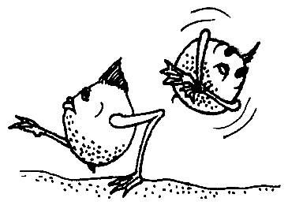Tombuk, perdeli ayaklarla sona eren iki uzun bacağıyla diğerlerinden ayrılan küremsi, benekli bir balıktır. Derin göllerde yaşar, burada yiyecek arayarak dipleri tarar ve su salyangozlarını tercih eder. Tombuk öyle pek tehlikeli değildir ama yüzücülerin ayaklarıyla giysilerini kemirir. Denizhalkı tarafından zararlı bir yaratık sayılır, onunla kauçukumsu bacaklarını düğümleyerek başa çıkarlar. Bacakları düğümlenen Tombuk, manevra yapamadığı için uzaklara sürüklenir ve düğümünü çözmeden geri dönemez – ki bu da saatler alır.
POGREBIN
S.B.S.: XXX
Pogrebin topu topu otuz santim uzunluğunda, kıllı bir gövdesi ama düzgün, haddinden büyük kafası olan bir Rus iblisidir. Çömeldiği zaman parlak, yuvarlak bir kayaya benzer, insanlar Pogrebin'in ilgisini çeker, onları izlemeyi sever. İnsanların gölgelerinde yürüyüp, gölgenin sahibi aniden geri dönünce hemen çömelir. Eğer bir Pogrebin'in bir insanı birkaç saat izlemesine izin verilirse, avının üzerine büyük bir boşluk hissi çöker, sonunda da bir uyuşukluk ve umutsuzluk durumu yaşamaya başlar. Kurban yürümekten vazgeçip dizüstü çökerek her şeyin anlamsızlığı karşısında ağlamaya başladığı zaman, Pogrebin onun üstüne atılır ve onu yutmaya çalışır. Ancak Pogrebin'i basit uğursuzluk büyüleri ya da Sersemletme Büyüsü'yle püskürtmek kolaydır. Tekme atmanın da etkili olduğu görülmüştür.
PORLOCK (DOMBAZ)
SBS: XX
Dombaz, İngiltere'de Dorset'te ve Güney İrlanda'da bulunan bir at muhafızıdır. Saçaklı bir kürkle kaplıdır, başında çok miktarda kabarık saçı vardır, burnuysa orantısız ölçüde büyüktür. Çift toynaklı iki ayağının üzerinde yürür. Kolları küçüktür, ucunda dört güdük parmak vardır. Yetişkin Dombazlar altmış santim civarındadır ve otla beslenirler.
Dombaz utangaçtır, atları korumak için yaşar. Ahırların samanlarına kıvrılır ya da koruduğu sürünün ortasına sığınır. Dombazlar insanlara güvenmez ve onlar yaklaşırken hep saklanırlar.
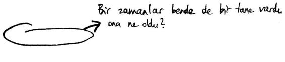
PUFFSKEIN (POFYUMAK)
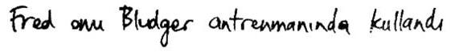S.B.S.: XX
Pofyumak dünyanın her yanında bulunur. Küre biçimindedir, yumuşak, hardal rengi bir kürkle kaplı, mıncıklanmaya ya da öteye beriye savrulmaya hiç itirazı olmayan uysal bir yaratıktır. Kolay bakılan Pofyumak, halinden memnun olduğu zaman boğuk bir vınlama sesi çıkanr. Ara sıra Pofyumak'ın içinden çok uzun, ince, pembe bir dil dışarı fırlar ve evde bir yılan gibi dolanarak yiyecek arar. Pofyumak, artık yemeklerden örümceklere kadar her şeyi yiyen bir leşçidir, ama en sevdiği şey dilini uyuyan büyücülerin burnuna sokup sümüklerini yemektir. Onun bu eğilimi kuşaklardır büyücü çocuklarının Pofyumak'a bayılmasına yol açmıştır. Bugün de hâlâ büyücülerin gözbebeği olan bir ev hayvanıdır.
OUINTAPED (BEŞAYAK)
(Tüylü MacBoon olarak da bilinir)
S.B.S.: XXXXX
Beşayak özellikle insanları tercih eden, son derece tehlikeli, etobur bir canavardır. Alçak gövdesi kalın kızıl-kahverengi tüylerle örtülüdür. Her biri küt ayaklarla sona eren beş bacağı da öyle. Beşayak, yalnızca İskoçya'nın en kuzey ucundaki Drear Adası'nda bulunur. Drear bu yüzden işaretlenemez hale getirilmiştir.
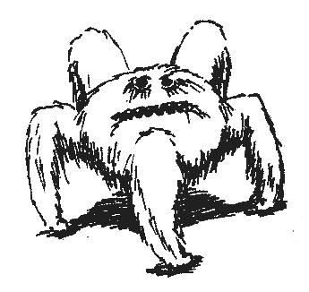Efsaneye göre, bir zamanlar Drear Adası'nda iki büyücü aile varmış: McClivert'lar ile MacBoon'lar. McClivert klanının reisi Dugald ile MacBoon klanının başı Quintius'un sarhoş sarhoş tutuştuğu bir büyücülük düellosunun Dugald'ın ölümüne yol açtığı sanılıyor. Hikâyeye göre, McClivert'lardan oluşan bir çete bir gece MacBoon'ların evlerini sardı ve misilleme olsun diye MacBoon'ların her birine Biçim Değiştirterek, onları beş bacaklı korkunç birer yaratığa dönüştürdü. McClivert'Iar, Biçim Değiştirmiş MacBoon'ların bu halleriyle çok daha tehlikeli olduğunu çok geç fark ettiler (MacBoon'lar sihir konusundaki büyük beceriksizlikleriyle nam salmıştı). Üstelik de MacBoon'lar onları insan biçimine döndürme yolundaki her çabaya karşı direndiler. Canavarlar, adada hiç insan kalmayana kadar bütün McClivert'ları öldürdü. MacBoon canavarları, artık adada asa kullanacak kimse olmadığından sonsuza kadar öyle kalacaklarını ancak o zaman anladılar.
Bu hikâyenin doğru olup olmadığı asla bilinmeyecek. Atalarının başına neler geldiğini anlatacak bir McClivert'ın ya da MacBoon'un hayatta kalmadığı ise kesin. Beşayaklar konuşamaz. Sihirli Yaratıktarın Düzenlenmesi ve Denerimi Dairesi'nin bir örnek yakalayıp Biçim Değiştirme yolundaki her çabasına yılmadan karşı çıktılar. Bu yüzden onlar gerçekten de lakaplarının ima ettiği gibi Tüylü MacBoon'larsa, ömürlerinin geri kalanını canavar olarak sürdürmekten hayli memnun olduklarını varsaymak durumundayız.
RAMORA
S.B.S.: XXX
Ramora, Hint Okyanusu'nda bulunan gümüş bir balıktır. Çok güçlü bir sihiri vardır, gemilerin demirlemesine yol açar, gemicilerin koruyucusudur. Onları kaçak büyücü avcılardan korumak için birçok yasa koymuş olan Uluslararası Büyücüler Konfederasyonu, Ramora'lara çok değer verir.
RED CAP (KIRMIZI KAFA)
S.B.S.: XXX
Bu cücemsi yaratıklar eski savaş alanlarındaki deliklerde, ya da insan kanının akmış olduğu yerlerde yaşarlar. Uğursuzluk büyüleri dahil çeşitli büyülerle kolaylıkla püskürtülebildikleri halde, yalnız başına dolaşan Muggle'lar için büyük bir tehlike oluştururlar, karanlık gecelerde kafalarına vurarak onları öldürmeye kalkarlar. Kırmızı Kafalar'a en çok Kuzey Avrupa'da rastlanır.
RE'EM
S.B.S: XXX
Altın derili son derece nadide dev öküzler olan Re'em'lere, hem Kuzey Amerika'nın, hem de Uzakdoğu'nun yabanıl yörelerinde rastlanır. Re'em kanı, içene muazzam bir kuvvet verir. Ancak bu kanı elde etmenin zorluğu ve miktarının pek az olması nedeniyle, nadiren açık pazarda satılır.
RUNESPOOR (ÇATALİZ)
S.B.S.: XXXX
Çataliz'in kökeni, küçük bir Afrika ülkesi olan Burkina Faso'dur. Üç-başlı bir yılan olan Çataliz, genelde iki metre kadar bir boya ulaşır. Kara çizgili parlak turuncu renkte olan Çataliz'in görülmesi fazlasıyla kolaydır. Bu yüzden de Burkina Faso Sihir Bakanlığı, bazı ormanlar, sadece Çatalizler yaşayabilsin diye işaretlenemez hale getirmiştir.
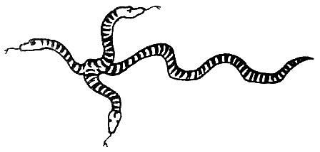Çataliz, kendisi pek yırtıcı bir canavar olmasa da, vaktiyle Karanlık Büyücüler'in sevdiği bir ev hayvanıydı. Bunda mutlaka çarpıcı ve ürkütücü görünüşünün bir rolü olmuştur. Onların tuhaf alışkanlıkları hakkındaki bilgimizi ise, bu yılanlara bakmış ve onlarla konuşmuş olan Çatalağızlar'ın yazdıklarına borçluyuz. Onların tuttuğu kayıtlardan, Çataliz'in başlarının her birinin farklı bir amaca hizmet ettiği anlaşılıyor. Soldaki baş (Çataliz'e yüzünü dönen büyücüye göre), planlamacıdır. Çataliz'in nereye gideceğine ve ne yapacağına o karar verir. Ortadaki baş, hayalcidir (Çataliz'ler günler boyunca hareketsiz kalıp, görkemli rüyalar ve hayaller içinde kendilerini kaybedebilirler), Sağdaki baş ise eleştirmendir. Sürekli çıkardığı sinir bozucu tıslamayla, sol ve orta başların yaptıklarını değerlendirir. Sağdaki başın dişleri son derece zehirlidir. Çataliz'ler fazla yaşlanmaz, çünkü başlar birbirine saldırma eğilimi gösterir. Sağ başı yok olmuş Çataliz'lere sık sık rastlanır, bu durumlarda öbür iki baş bir araya gelmiş, onu ısınp koparmış demektir.
Çataliz ağzından yumurtlar, bunu yaptığı bilinen tek sihirli canavar odur. Bu yumurtalar, zihin kıvraklığını artıran iksirlerin yapımında çok değerlidir. Çataliz yumurtaları ve yılanın kendisi üzerine, yüzyıllardır hızı kesilmeyen bir karaborsa vardır.
SALAMANDER (SEMENDER)
S.B.S.: XXX
Semender alevle beslenen, ateş içinde yaşayan küçük bir kertenkeledir. Parlak beyazdır, içinde belirdiği ateşin ısısına göre mavi ya da kırmızı görünür.
Semenderler, kendilerine düzenli biçimde biber verilirse, ateşin dışında da altı saate kadar sağ kalabilirler. Ancak, sadece içinden çıktıkları ateş yandığı sürece yaşarlar. Semender kanı, güçlü tedavi edici ve sağaltıcı özelliklere sahiptir.
SEA SERPENT (SU YILANI)
S.B.S.: XXX
Su yılanları, Atlas ve Pasifik Okyanusu ile Akdeniz'de bulunur. Korkutucu görünüşleri ve vahşi davranışları üzerine çılgınca Muggle hikâyelerine rağmen, su yılanlarının bir insanı öldürdüğü ne duyulmuş ne de görülmüştür. Su yılanının boyu otuz metreye varabilir. At kafası gibi bir kafası ve denizden tümsekler halinde yükselen uzun, kavisli bir gövdesi vardır.
SHRAKE (HARMAÇ)
S.B.S.: XXX
Atlas Okyanusu'nda bulunan, tamamen dikenle kaplı bir balıktır. İlk Harmaç sürüsünün, 1800'lerin başlarında bir yelkenci büyücü ekibine hakaret eden Muggle balıkçılara karşı intikam olsun diye yaratıldığına inanılır. O günden sonra, denizin o bölümünde balık tutan Muggle'ların çektikleri ağlar, derinlerde yüzen Harmaç'ların marifetiyle, su yüzüne parçalanmış ve bomboş halde gelmiştir.
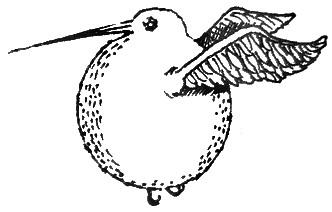
SNIDGET (SİNİCİT)
S.B.S.: XXXX
Altın Sinicit çok nadir bulunan, koruma altındaki bir kuş türüdür. Yusyuvarlaktır, ince uzun bir gagası ve pırıl pırıl mücevher gibi gözleri vardır. Altın Sinicit, inanılmaz bir çeviklik ve beceriyle yön değiştirebilen, fevkalade hızlı bir uçucudur. Bunu da kanatlarının dönebilir eklemlerine borçludur.
Altın Sinicit'in tüyleri ve gözleri öyle değerlidir ki, bir zamanlar büyücüler tarafından nesli tükenene kadar avlanma tehlikesiyle karşı karşıya kalmıştı. Neyse ki bu tehlike vaktinde fark edildi ve tür korundu. Bunu sağlayan en önemli öğe de, Quidditch oyununda Sinicit yerine Altın Snitch'in konması oldu. Dünyanın dört bucağında Sinicit korunakları vardır.
SPHINX (SFENKS)
S.B.S.: XXXX
Mısır sfenksi aslan gövdesine ve insan başına sahiptir. Bin yıldan uzun süredir, cadılar ve büyücüler tarafindan değerli şeyler, ve gizli yerleri korumakta kullanılır. Son derece zeki olan sfenks, bilmece ve tekerlemelerden keyif duyar. Koruduğu şey tehdit edilince, genellikle tehlikeli bir hal alır.
STREELER (YANGOZ)
S.B.S.: XXX
Yangoz saatte bir rengi değişen dev bir salyangozdur. Arkasında öylesine zehirli bir iz bırakır ki, bu zehir üzerinden geçtiği bütün bitkileri yakıp büzer. Yangoz birçok Afrika ülkesinin yerlisidir, ancak Avrupa, Asya, Güney ve Kuzey Amerika'daki büyücüler tarafından da başarıyla yetiştirilmiştir. Kaleydoskop gibi renk değişikliklerinden hoşlananlar onu ev hayvanı olarak edinir, zehri ise Cörkpâre'leri öldüren çok az maddeden biridir.
TEBO
S.B.S.: XXXX
Tebo. Kongo ve Zaire'de bulunan kül renkli bir yabandomuzudur. Görünmezlik gücü, ondan kaçınmayı ya da onu yakalamayı zorlaştırır. Çok da tehlikelidir. Koruyucu kalkanlar ve giysilerde kullanılan Tebo derisine büyücüler çok değer verir.
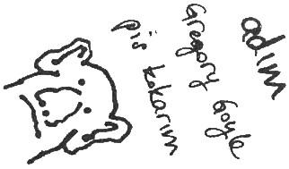
TROLL (İFRİT)
S.B.S.: XXXX
İfrit, üç buçuk metreyi aşan boyu ve bir tonun üstündeki ağırlığıyla korkutucu bir yaratıktır. Şaşılacak kuvvetine eşdeğer aptallığıyla tanınan ifrit, çoğu kez vahşice davranır, ne yapacağı da önceden kestirilemez. İfritler İskandinavya kökenlidir ama bu günlerde Britanya'da, İrlanda'da ve Kuzey Avrupa'nın diğer bölgelerinde de bulunuyorlar.
İfritler genelde, ilkel bir dil izlenimi veren homurtularla konuşurlar. Ancak bazılarının insan dilini anladığı, hatta birkaç basit kelime konuşabildiği görülmüştür. Türün daha zeki olanları koruyucu olarak eğitilir.
Üç tür İfrit vardır: Dağ, orman ve nehir ifriti. Dağ ifriti en buyuk ve vahşi olanıdır. Keldir, soluk gri renktedlr. Orman ifritinin soluk yeşil ya da kahverengi, ince ve dağınık saçı da bulunur. Nehir ifritinin kısa boynuzları vardır, kıllı olabilir. Morumsu renktedir, genellikle köprülerin altına sinmiş halde bulunur. İfritler çiğ et yer ve avları konusunda seçici değillerdir. Bu avlar yabani hayvanlardan insanlara kadar geniş bir yelpaze oluşturur.
UNICORN (TEK BOYNUZLU AT)
S.B.S.: XXXX
Tek boynuzlu at, kuzey Avrupa'nın ormanlannda bulunan güzel bir yaratıktır. Tamamen büyüdüğünde saf beyaz, boynuzlu bir at olur, oysa tayları başlangıçta altın renktedir, olgunluğa erişmeden önce de gümüşiye dönerler. Tek boynuzlu atın boynuzunun, kanının ve tüyünün son derece sihirli özellikleri vardır. Genellikle insanlarla temas kurmaktan kaçınır, kendisine bir büyücüdense cadının yaklaşmasını tercih eder. Öylesine ayağına çabuktur ki, yakalanması çok zordur.
WEREWOLF (KURTADAM)
S.B.S.: XXXXX
Kurtadam'ın Kuzey Avrupa'dan çıktığına inanılsa da, dünyanın her yerinde bulunur. İnsanlar sadece ısırılınca kurtadam olurlar. Bilinen bir tedavisi yoktur, ancak iksir yapımındaki son gelişmeler, en kötü belirtileri büyük ölçüde hafifletmiştir. Genelde aklı başında ve normal olan ısırılmış büyücü ya da Muggle. ayda bir kez, dolunayda, gözünü kan bürümüş bir canavara dönüşür. Kurtadam, av olarak insanları tercih edip ille de onları araması açısından, fantastik yaratıklar arasında neredeyse benzersizdir.
WINGED HORSE (KANATLI AT)
S.B.S.: XX-XXXX
Kanatlı Atlar dünyanın her yerinde mevcuttur. Birçok değişik cinsleri vardır. Bunlar arasında Abraxan (son derece güçlü dev palominos), Aethonan (kestane rengi, İngiltere ve İrlanda'da popüler), Granian (kır renkli ve çok hızlı) ve nadir Thestral'i (siyah renktedir, görünmezlik gücüne sahiptir ve birçok büyücü tarafından talihsiz olarak kabul edilir) sayabiliriz. Hipogrif gibi Kanatlı At'ın sahibinin de, düzenli aralıklarla ona Görüş Silme Büyüsü yapması gerekir (Giriş'e bakın).
YETİ
(Kar Adam, Kocaayak olarak da bilinir)
S.B.S.: XXXX
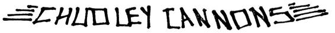Tibet'in yerlisi olan Yeti'nin ifritle akraba olduğuna inanılır, ancak henüz kimse gerekli testleri yapacak kadar yakınına sokulamamıştır. Boyu beş metreye varan Yeti, baştan ayağa bembeyaz tüylerle kaplıdır. Yeti yoluna çıkan her şeyi yiyip yutar ama ateşten korkar ve usta büyücüler tarafından geri püskürtülebilir.